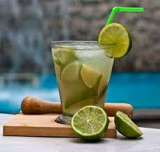

Caipirinha

Description
With all that good food, we need to have at least an equal good drink
to combine with. That said, caipirinha was our choice. It's a very re
freshing brazillian drink that is made with lemons, sugar and "cachaça".
Ingredients
- 2 limes per drink
- Sugar
- Ice
- Cachaça
Steps
- Prepare the limes
- Slice off the end of each lime
- Cut the limes in half, lenghtwise. Stand the halved limes up
and slice lenghtwise in quarters
- Take each quarter, one at time, and hold it upright by the skin
side. Then, slice down through the pith, removing and discarding it.
- Lay each pith-less quarter skin side down and cut the lime in
half, crosswise
- You should have 8 wedges per lime
- Muddle
- If you don't have an ice machine that produces crushed ice, place
your ice cubes in a resealable bag, and smash with a meat tenderizer
or rolling pin until the ice is crushed.
- In a rocks glass, combine the lime wedges (try to place them flesh side up)
and 1 to 2 tablespoons of sugar. Muddle just until the limes release their juices.
Muddling too much will cause the caipirinha to be bitter!
- Mix!
- Add the ice, then pour 6 to 8 ounces of cachaça. Serve with stirrers and let your guests stir their own drinks